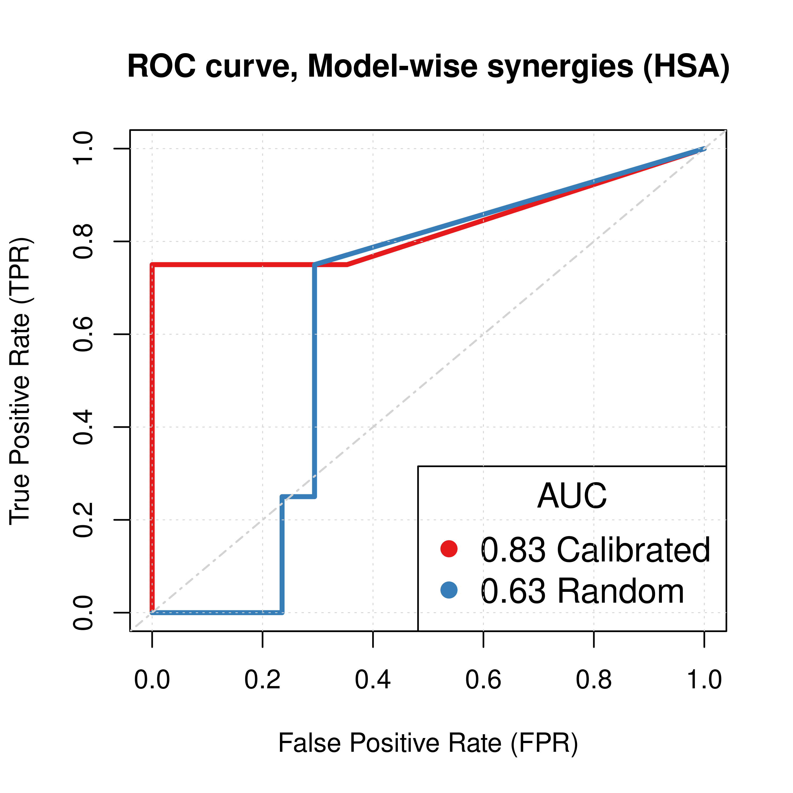
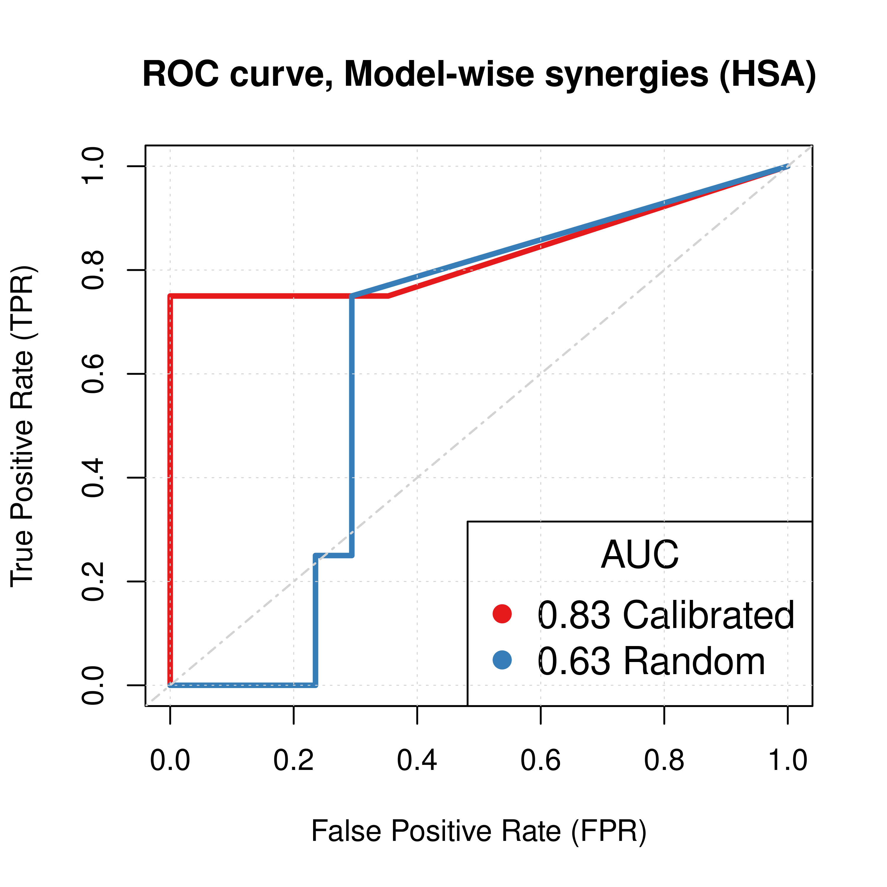
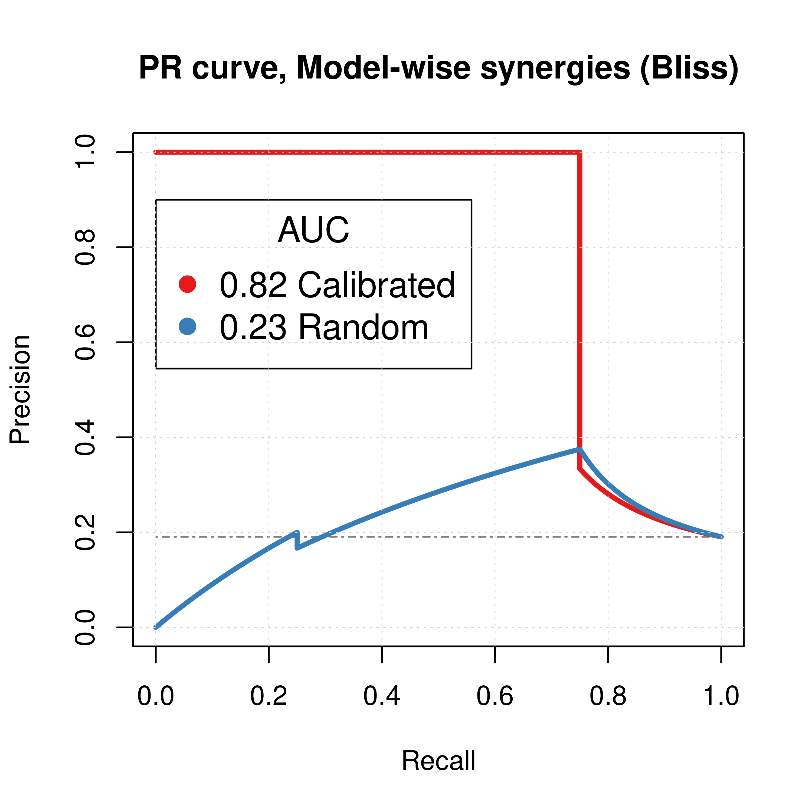
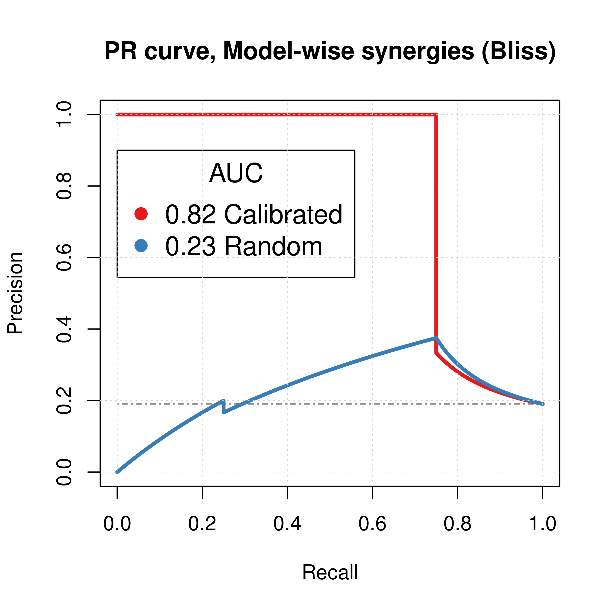

CASCADE 1.0 Analysis
Performance of automatically parameterized models against published data in (Flobak et al. 2015)
HSA results
- HSA refers to the synergy method used in
Drabmeto assess the synergies from thegitsbemodels - We test performance using ROC and PR AUC for both the ensemble-wise and model-wise synergies from
Drabme - Calibrated models: fitted to steady state (\(50\) simulations)
- Random models: fitted to proliferation profile (\(50\) simulations)
Gitsbemodels have mutations on link operator only
Load results:
# 'ss' => calibrated models, 'prolif' => proliferative random models
# 'ew' => ensemble-wise, 'mw' => model-wise
## HSA results
ss_hsa_ew_file = paste0("results/link-only/cascade_1.0_ss_50sim_fixpoints_hsa_ensemblewise_synergies.tab")
ss_hsa_mw_file = paste0("results/link-only/cascade_1.0_ss_50sim_fixpoints_hsa_modelwise_synergies.tab")
prolif_hsa_ew_file = paste0("results/link-only/cascade_1.0_rand_50sim_fixpoints_hsa_ensemblewise_synergies.tab")
prolif_hsa_mw_file = paste0("results/link-only/cascade_1.0_rand_50sim_fixpoints_hsa_modelwise_synergies.tab")
ss_hsa_ensemblewise_synergies = emba::get_synergy_scores(ss_hsa_ew_file)
ss_hsa_modelwise_synergies = emba::get_synergy_scores(ss_hsa_mw_file, file_type = "modelwise")
prolif_hsa_ensemblewise_synergies = emba::get_synergy_scores(prolif_hsa_ew_file)
prolif_hsa_modelwise_synergies = emba::get_synergy_scores(prolif_hsa_mw_file, file_type = "modelwise")
# calculate probability of synergy in the modelwise results
ss_hsa_modelwise_synergies = ss_hsa_modelwise_synergies %>%
mutate(synergy_prob_ss = synergies/(synergies + `non-synergies`))
prolif_hsa_modelwise_synergies = prolif_hsa_modelwise_synergies %>%
mutate(synergy_prob_prolif = synergies/(synergies + `non-synergies`))
observed_synergies_file = 'data/observed_synergies_cascade_1.0'
observed_synergies = emba::get_observed_synergies(observed_synergies_file)
# 1 (positive/observed synergy) or 0 (negative/not observed) for all tested drug combinations
observed = sapply(prolif_hsa_modelwise_synergies$perturbation %in% observed_synergies, as.integer)
# 'ew' => ensemble-wise, 'mw' => model-wise
pred_ew_hsa = bind_cols(ss_hsa_ensemblewise_synergies %>% rename(ss_score = score),
prolif_hsa_ensemblewise_synergies %>% select(score) %>% rename(prolif_score = score),
as_tibble_col(observed, column_name = "observed"))
pred_mw_hsa = bind_cols(
ss_hsa_modelwise_synergies %>% select(perturbation, synergy_prob_ss),
prolif_hsa_modelwise_synergies %>% select(synergy_prob_prolif),
as_tibble_col(observed, column_name = "observed"))ROC curves
res_ss_ew = get_roc_stats(df = pred_ew_hsa, pred_col = "ss_score", label_col = "observed")
res_prolif_ew = get_roc_stats(df = pred_ew_hsa, pred_col = "prolif_score", label_col = "observed")
res_ss_mw = get_roc_stats(df = pred_mw_hsa, pred_col = "synergy_prob_ss", label_col = "observed", direction = ">")
res_prolif_mw = get_roc_stats(df = pred_mw_hsa, pred_col = "synergy_prob_prolif", label_col = "observed", direction = ">")
# Plot ROCs
my_palette = RColorBrewer::brewer.pal(n = 9, name = "Set1")
plot(x = res_ss_ew$roc_stats$FPR, y = res_ss_ew$roc_stats$TPR,
type = 'l', lwd = 3, col = my_palette[1], main = 'ROC curve, Ensemble-wise synergies (HSA)',
xlab = 'False Positive Rate (FPR)', ylab = 'True Positive Rate (TPR)')
lines(x = res_prolif_ew$roc_stats$FPR, y = res_prolif_ew$roc_stats$TPR,
lwd = 3, col = my_palette[2])
legend('bottomright', title = 'AUC', col = my_palette[1:2], pch = 19,
legend = c(paste(round(res_ss_ew$AUC, digits = 3), "Calibrated"),
paste(round(res_prolif_ew$AUC, digits = 3), "Random")), cex = 1.3)
grid(lwd = 0.5)
abline(a = 0, b = 1, col = 'lightgrey', lty = 'dotdash', lwd = 1.2)
plot(x = res_ss_mw$roc_stats$FPR, y = res_ss_mw$roc_stats$TPR,
type = 'l', lwd = 3, col = my_palette[1], main = 'ROC curve, Model-wise synergies (HSA)',
xlab = 'False Positive Rate (FPR)', ylab = 'True Positive Rate (TPR)')
lines(x = res_prolif_mw$roc_stats$FPR, y = res_prolif_mw$roc_stats$TPR,
lwd = 3, col = my_palette[2])
legend('bottomright', title = 'AUC', col = my_palette[1:3], pch = 19,
legend = c(paste(round(res_ss_mw$AUC, digits = 3), "Calibrated"),
paste(round(res_prolif_mw$AUC, digits = 3), "Random")), cex = 1.3)
grid(lwd = 0.5)
abline(a = 0, b = 1, col = 'lightgrey', lty = 'dotdash', lwd = 1.2) 

Figure 1: ROC curves (CASCADE 1.0, HSA synergy method)
PR curves
pr_ss_ew_hsa = pr.curve(scores.class0 = pred_ew_hsa %>% pull(ss_score) %>% (function(x) {-x}),
weights.class0 = pred_ew_hsa %>% pull(observed), curve = TRUE, rand.compute = TRUE)
pr_prolif_ew_hsa = pr.curve(scores.class0 = pred_ew_hsa %>% pull(prolif_score) %>% (function(x) {-x}),
weights.class0 = pred_ew_hsa %>% pull(observed), curve = TRUE)
pr_ss_mw_hsa = pr.curve(scores.class0 = pred_mw_hsa %>% pull(synergy_prob_ss),
weights.class0 = pred_mw_hsa %>% pull(observed), curve = TRUE, rand.compute = TRUE)
pr_prolif_mw_hsa = pr.curve(scores.class0 = pred_mw_hsa %>% pull(synergy_prob_prolif),
weights.class0 = pred_mw_hsa %>% pull(observed), curve = TRUE)
plot(pr_ss_ew_hsa, main = 'PR curve, Ensemble-wise synergies (HSA)',
auc.main = FALSE, color = my_palette[1], rand.plot = TRUE)
plot(pr_prolif_ew_hsa, add = TRUE, color = my_palette[2])
legend('topright', title = 'AUC', col = my_palette[1:2], pch = 19,
legend = c(paste(round(pr_ss_ew_hsa$auc.davis.goadrich, digits = 3), "Calibrated"),
paste(round(pr_prolif_ew_hsa$auc.davis.goadrich, digits = 3), "Random")))
grid(lwd = 0.5)
plot(pr_ss_mw_hsa, main = 'PR curve, Model-wise synergies (HSA)',
auc.main = FALSE, color = my_palette[1], rand.plot = TRUE)
plot(pr_prolif_mw_hsa, add = TRUE, color = my_palette[2])
legend('left', title = 'AUC', col = my_palette[1:3], pch = 19,
legend = c(paste(round(pr_ss_mw_hsa$auc.davis.goadrich, digits = 3), "Calibrated"),
paste(round(pr_prolif_mw_hsa$auc.davis.goadrich, digits = 3), "Random")))
grid(lwd = 0.5)

Figure 2: PR curves (CASCADE 1.0, HSA synergy method)
Calibrated models perform a lot better than the random ones
AUC sensitivity
- Investigate combining the synergy results of calibrated and proliferative (random) models
- Quantify the amount of information from the proliferative (random) models that can be used to augment the calibrated results?
- Ensemble-wise scenario: \(score = calibrated + \beta \times random\)
- \(\beta \rightarrow +\infty\): mostly proliferative (random) model predictions
- \(\beta \rightarrow -\infty\): mostly reverse proliferative (random) model predictions
- \(\beta \simeq -1\): calibrated models are normalized against proliferative (random) model predictions.
- Model-wise scenario: \((1-w) \times prob_{cal} + w \times prob_{rand}, w \in[0,1]\)
- \(w=0\): only calibrated model predictions
- \(w=1\): only proliferative (random) model predictions
# Ensemble-wise
betas = seq(from = -12, to = 12, by = 0.1)
prolif_roc = sapply(betas, function(beta) {
pred_ew_hsa = pred_ew_hsa %>% mutate(combined_score = ss_score + beta * prolif_score)
res = roc.curve(scores.class0 = pred_ew_hsa %>% pull(combined_score) %>% (function(x) {-x}),
weights.class0 = pred_ew_hsa %>% pull(observed))
auc_value = res$auc
})
prolif_pr = sapply(betas, function(beta) {
pred_ew_hsa = pred_ew_hsa %>% mutate(combined_score = ss_score + beta * prolif_score)
res = pr.curve(scores.class0 = pred_ew_hsa %>% pull(combined_score) %>% (function(x) {-x}),
weights.class0 = pred_ew_hsa %>% pull(observed))
auc_value = res$auc.davis.goadrich
})
df_ew = as_tibble(cbind(betas, prolif_roc, prolif_pr))
df_ew = df_ew %>% tidyr::pivot_longer(-betas, names_to = "type", values_to = "AUC")
ggline(data = df_ew, x = "betas", y = "AUC", numeric.x.axis = TRUE, color = "type",
plot_type = "l", xlab = TeX("$\\beta$"), ylab = "AUC (Area Under Curve)",
legend = "none", facet.by = "type", palette = my_palette,
panel.labs = list(type = c("Precision-Recall", "ROC")),
title = TeX("AUC sensitivity to $\\beta$ parameter (HSA, CASCADE 1.0)")) +
theme(plot.title = element_text(hjust = 0.5)) +
geom_vline(xintercept = 0) +
geom_vline(xintercept = -1, color = "black", size = 0.3, linetype = "dashed") +
geom_text(aes(x=-2, label=" = -1", y=0.25), colour="black", angle=90) +
grids()Figure 3: AUC sensitivity (CASCADE 1.0, HSA synergy method, Ensemble-wise results)
# Model-wise
weights = seq(from = 0, to = 1, by = 0.05)
prolif_roc_mw = sapply(weights, function(w) {
pred_mw_hsa = pred_mw_hsa %>%
mutate(weighted_prob = (1 - w) * pred_mw_hsa$synergy_prob_ss + w * pred_mw_hsa$synergy_prob_prolif)
res = roc.curve(scores.class0 = pred_mw_hsa %>% pull(weighted_prob),
weights.class0 = pred_mw_hsa %>% pull(observed))
auc_value = res$auc
})
prolif_pr_mw = sapply(weights, function(w) {
pred_mw_hsa = pred_mw_hsa %>%
mutate(weighted_prob = (1 - w) * pred_mw_hsa$synergy_prob_ss + w * pred_mw_hsa$synergy_prob_prolif)
res = pr.curve(scores.class0 = pred_mw_hsa %>% pull(weighted_prob),
weights.class0 = pred_mw_hsa %>% pull(observed))
auc_value = res$auc.davis.goadrich
})
df_mw = as_tibble(cbind(weights, prolif_roc_mw, prolif_pr_mw))
df_mw = df_mw %>% tidyr::pivot_longer(-weights, names_to = "type", values_to = "AUC")
ggline(data = df_mw, x = "weights", y = "AUC", numeric.x.axis = TRUE, color = "type",
plot_type = "l", xlab = TeX("weight $w$"), ylab = "AUC (Area Under Curve)",
legend = "none", facet.by = "type", palette = my_palette,
panel.labs = list(type = c("Precision-Recall", "ROC")), title.position = "center",
title = TeX("AUC sensitivity to weighted average score (HSA, CASCADE 1.0)")) +
theme(plot.title = element_text(hjust = 0.5)) +
grids()
Figure 4: AUC sensitivity (CASCADE 1.0, HSA synergy method, Model-wise results)
- There are \(\beta\) values that can boost the predictive performance of the calibrated models (ensemble-wise) but no \(w\) weight in the model-wise case.
- \(\beta=-1\) seems to be a common value that maximizes both the ROC-AUC and the PR-AUC.
- The PR-AUC is more sensitive than the ROC-AUC, so a better indicator of performance.
Bliss results
- Bliss refers to the synergy method used in
Drabmeto assess the synergies from thegitsbemodels - We test performance using ROC and PR AUC for both the ensemble-wise and model-wise synergies from
Drabme - Calibrated models: fitted to steady state (\(50\) simulations)
- Random models: fitted to proliferation profile (\(50\) simulations)
Gitsbemodels have mutations on link operator only
Load results:
# 'ss' => calibrated models, 'prolif' => random models
## Bliss results
ss_bliss_ensemblewise_file = paste0("results/link-only/cascade_1.0_ss_50sim_fixpoints_bliss_ensemblewise_synergies.tab")
ss_bliss_modelwise_file = paste0("results/link-only/cascade_1.0_ss_50sim_fixpoints_bliss_modelwise_synergies.tab")
prolif_bliss_ensemblewise_file = paste0("results/link-only/cascade_1.0_rand_50sim_fixpoints_bliss_ensemblewise_synergies.tab")
prolif_bliss_modelwise_file = paste0("results/link-only/cascade_1.0_rand_50sim_fixpoints_bliss_modelwise_synergies.tab")
ss_bliss_ensemblewise_synergies = emba::get_synergy_scores(ss_bliss_ensemblewise_file)
ss_bliss_modelwise_synergies = emba::get_synergy_scores(ss_bliss_modelwise_file, file_type = "modelwise")
prolif_bliss_ensemblewise_synergies = emba::get_synergy_scores(prolif_bliss_ensemblewise_file)
prolif_bliss_modelwise_synergies = emba::get_synergy_scores(prolif_bliss_modelwise_file, file_type = "modelwise")
# calculate probability of synergy in the modelwise results
ss_bliss_modelwise_synergies = ss_bliss_modelwise_synergies %>%
mutate(synergy_prob_ss = synergies/(synergies + `non-synergies`))
prolif_bliss_modelwise_synergies = prolif_bliss_modelwise_synergies %>%
mutate(synergy_prob_prolif = synergies/(synergies + `non-synergies`))
# 'ew' => ensemble-wise, 'mw' => model-wise
pred_ew_bliss = bind_cols(ss_bliss_ensemblewise_synergies %>% rename(ss_score = score),
prolif_bliss_ensemblewise_synergies %>% select(score) %>% rename(prolif_score = score),
as_tibble_col(observed, column_name = "observed"))
pred_mw_bliss = bind_cols(
ss_bliss_modelwise_synergies %>% select(perturbation, synergy_prob_ss),
prolif_bliss_modelwise_synergies %>% select(synergy_prob_prolif),
as_tibble_col(observed, column_name = "observed"))ROC curves
res_ss_ew = get_roc_stats(df = pred_ew_bliss, pred_col = "ss_score", label_col = "observed")
res_prolif_ew = get_roc_stats(df = pred_ew_bliss, pred_col = "prolif_score", label_col = "observed")
res_ss_mw = get_roc_stats(df = pred_mw_bliss, pred_col = "synergy_prob_ss", label_col = "observed", direction = ">")
res_prolif_mw = get_roc_stats(df = pred_mw_bliss, pred_col = "synergy_prob_prolif", label_col = "observed", direction = ">")
# Plot ROCs
plot(x = res_ss_ew$roc_stats$FPR, y = res_ss_ew$roc_stats$TPR,
type = 'l', lwd = 3, col = my_palette[1], main = 'ROC curve, Ensemble-wise synergies (Bliss)',
xlab = 'False Positive Rate (FPR)', ylab = 'True Positive Rate (TPR)')
lines(x = res_prolif_ew$roc_stats$FPR, y = res_prolif_ew$roc_stats$TPR,
lwd = 3, col = my_palette[2])
legend('bottomright', title = 'AUC', col = my_palette[1:2], pch = 19,
legend = c(paste(round(res_ss_ew$AUC, digits = 3), "Calibrated"),
paste(round(res_prolif_ew$AUC, digits = 3), "Random")), cex = 1.3)
grid(lwd = 0.5)
abline(a = 0, b = 1, col = 'lightgrey', lty = 'dotdash', lwd = 1.2)
plot(x = res_ss_mw$roc_stats$FPR, y = res_ss_mw$roc_stats$TPR,
type = 'l', lwd = 3, col = my_palette[1], main = 'ROC curve, Model-wise synergies (Bliss)',
xlab = 'False Positive Rate (FPR)', ylab = 'True Positive Rate (TPR)')
lines(x = res_prolif_mw$roc_stats$FPR, y = res_prolif_mw$roc_stats$TPR,
lwd = 3, col = my_palette[2])
legend('bottomright', title = 'AUC', col = my_palette[1:2], pch = 19,
legend = c(paste(round(res_ss_mw$AUC, digits = 3), "Calibrated"),
paste(round(res_prolif_mw$AUC, digits = 3), "Random")), cex = 1.3)
grid(lwd = 0.5)
abline(a = 0, b = 1, col = 'lightgrey', lty = 'dotdash', lwd = 1.2)

Figure 5: ROC curves (CASCADE 1.0, Bliss synergy method)
The ROC statistics data for the calibrated models are as follows:
DT::datatable(data = res_ss_ew$roc_stats, options =
list(pageLength = 5, lengthMenu = c(5, 10, 16), searching = FALSE)) %>%
formatRound(c(1,6,7,8,9), digits = 3)Figure 6: ROC data for Calibrated Models (CASCADE 1.0, Bliss synergy method)
PR curves
pr_ss_ew_bliss = pr.curve(scores.class0 = pred_ew_bliss %>% pull(ss_score) %>% (function(x) {-x}),
weights.class0 = pred_ew_bliss %>% pull(observed), curve = TRUE, rand.compute = TRUE)
pr_prolif_ew_bliss = pr.curve(scores.class0 = pred_ew_bliss %>% pull(prolif_score) %>% (function(x) {-x}),
weights.class0 = pred_ew_bliss %>% pull(observed), curve = TRUE)
pr_ss_mw_bliss = pr.curve(scores.class0 = pred_mw_bliss %>% pull(synergy_prob_ss),
weights.class0 = pred_mw_bliss %>% pull(observed), curve = TRUE, rand.compute = TRUE)
pr_prolif_mw_bliss = pr.curve(scores.class0 = pred_mw_bliss %>% pull(synergy_prob_prolif),
weights.class0 = pred_mw_bliss %>% pull(observed), curve = TRUE)
plot(pr_ss_ew_bliss, main = 'PR curve, Ensemble-wise synergies (Bliss)',
auc.main = FALSE, color = my_palette[1], rand.plot = TRUE)
plot(pr_prolif_ew_bliss, add = TRUE, color = my_palette[2])
legend(x = 0, y = 0.9, title = 'AUC', col = my_palette[1:2], pch = 19, cex = 1.3,
legend = c(paste(round(pr_ss_ew_bliss$auc.davis.goadrich, digits = 3), "Calibrated"),
paste(round(pr_prolif_ew_bliss$auc.davis.goadrich, digits = 3), "Random")))
grid(lwd = 0.5)
plot(pr_ss_mw_bliss, main = 'PR curve, Model-wise synergies (Bliss)',
auc.main = FALSE, color = my_palette[1], rand.plot = TRUE)
plot(pr_prolif_mw_bliss, add = TRUE, color = my_palette[2])
legend(x = 0, y = 0.9, title = 'AUC', col = my_palette[1:3], pch = 19, cex = 1.3,
legend = c(paste(round(pr_ss_mw_bliss$auc.davis.goadrich, digits = 3), "Calibrated"),
paste(round(pr_prolif_mw_bliss$auc.davis.goadrich, digits = 3), "Random")))
grid(lwd = 0.5) 

Figure 7: PR curves (CASCADE 1.0, Bliss synergy method)
Calibrated models perform a lot better than the random ones
AUC sensitivity
Investigate same thing as described in here.
# Ensemble-wise
betas = seq(from = -12, to = 12, by = 0.1)
prolif_roc = sapply(betas, function(beta) {
pred_ew_bliss = pred_ew_bliss %>% mutate(combined_score = ss_score + beta * prolif_score)
res = roc.curve(scores.class0 = pred_ew_bliss %>% pull(combined_score) %>% (function(x) {-x}),
weights.class0 = pred_ew_bliss %>% pull(observed))
auc_value = res$auc
})
prolif_pr = sapply(betas, function(beta) {
pred_ew_bliss = pred_ew_bliss %>% mutate(combined_score = ss_score + beta * prolif_score)
res = pr.curve(scores.class0 = pred_ew_bliss %>% pull(combined_score) %>% (function(x) {-x}),
weights.class0 = pred_ew_bliss %>% pull(observed))
auc_value = res$auc.davis.goadrich
})
df_ew = as_tibble(cbind(betas, prolif_roc, prolif_pr))
df_ew = df_ew %>% tidyr::pivot_longer(-betas, names_to = "type", values_to = "AUC")
ggline(data = df_ew, x = "betas", y = "AUC", numeric.x.axis = TRUE, color = "type",
plot_type = "l", xlab = TeX("$\\beta$"), ylab = "AUC (Area Under Curve)",
legend = "none", facet.by = "type", palette = my_palette,
panel.labs = list(type = c("Precision-Recall", "ROC")),
title = TeX("AUC sensitivity to $\\beta$ parameter (Bliss, CASCADE 1.0)")) +
theme(plot.title = element_text(hjust = 0.5)) +
geom_vline(xintercept = 0) +
geom_vline(xintercept = -1, color = "black", size = 0.3, linetype = "dashed") +
geom_text(aes(x=-2, label=" = -1", y=0.25), colour="black", angle=90) +
grids()
Figure 8: AUC sensitivity (CASCADE 1.0, Bliss synergy method, Ensemble-wise results)
# Model-wise
weights = seq(from = 0, to = 1, by = 0.05)
prolif_roc_mw = sapply(weights, function(w) {
pred_mw_bliss = pred_mw_bliss %>%
mutate(weighted_prob = (1 - w) * pred_mw_bliss$synergy_prob_ss + w * pred_mw_bliss$synergy_prob_prolif)
res = roc.curve(scores.class0 = pred_mw_bliss %>% pull(weighted_prob),
weights.class0 = pred_mw_bliss %>% pull(observed))
auc_value = res$auc
})
prolif_pr_mw = sapply(weights, function(w) {
pred_mw_bliss = pred_mw_bliss %>%
mutate(weighted_prob = (1 - w) * pred_mw_bliss$synergy_prob_ss + w * pred_mw_bliss$synergy_prob_prolif)
res = pr.curve(scores.class0 = pred_mw_bliss %>% pull(weighted_prob),
weights.class0 = pred_mw_bliss %>% pull(observed))
auc_value = res$auc.davis.goadrich
})
df_mw = as_tibble(cbind(weights, prolif_roc_mw, prolif_pr_mw))
df_mw = df_mw %>% tidyr::pivot_longer(-weights, names_to = "type", values_to = "AUC")
ggline(data = df_mw, x = "weights", y = "AUC", numeric.x.axis = TRUE, color = "type",
plot_type = "l", xlab = TeX("weight $w$"), ylab = "AUC (Area Under Curve)",
legend = "none", facet.by = "type", palette = my_palette,
panel.labs = list(type = c("Precision-Recall", "ROC")), title.position = "center",
title = TeX("AUC sensitivity to weighted average score (Bliss, CASCADE 1.0)")) +
theme(plot.title = element_text(hjust = 0.5)) +
grids()
Figure 9: AUC sensitivity (CASCADE 1.0, Bliss synergy method, Model-wise results)
- There are \(\beta\) values that can boost the predictive performance of the calibrated models (ensemble-wise) but no \(w\) weight in the model-wise case.
- The PR-AUC is more sensitive than the ROC-AUC, so a better indicator of performance.
- A value very close to \(\beta=-1\) seems to be the one maximizes both the ROC-AUC and the PR-AUC.
The ROC ensemble-wise statistics data for the combined predictor \(calibrated + \beta \times random, \beta=-1\) are:
beta = -1
pred_ew_bliss = pred_ew_bliss %>% mutate(combined_score = ss_score + beta * prolif_score)
res_comb_pred = usefun::get_roc_stats(df = pred_ew_bliss, pred_col = "combined_score", label_col = "observed")
DT::datatable(data = res_comb_pred$roc_stats, options =
list(pageLength = 5, lengthMenu = c(5, 10, 16), searching = FALSE)) %>%
DT::formatRound(c(1,6,7,8,9), digits = 3)Figure 10: ROC data for Combined Predictor (CASCADE 1.0, Bliss synergy method)
Best ROC and PRC
Only for the next plot, Calibrated stands for the combined predictor results, i.e.\(calibrated + \beta \times random, \beta=-1\).
plot(x = res_comb_pred$roc_stats$FPR, y = res_comb_pred$roc_stats$TPR,
type = 'l', lwd = 3, col = my_palette[1], main = 'ROC curve, Ensemble-wise synergies (Bliss)',
xlab = 'False Positive Rate (FPR)', ylab = 'True Positive Rate (TPR)')
lines(x = res_prolif_ew$roc_stats$FPR, y = res_prolif_ew$roc_stats$TPR,
lwd = 3, col = my_palette[2])
legend('bottomright', title = 'AUC', col = my_palette[1:2], pch = 19,
legend = c(paste(round(res_comb_pred$AUC, digits = 3), "Calibrated"),
paste(round(res_prolif_ew$AUC, digits = 3), "Random")), cex = 1.3)
grid(lwd = 0.5)
abline(a = 0, b = 1, col = 'lightgrey', lty = 'dotdash', lwd = 1.2)
res_comb_pred_pr = pr.curve(scores.class0 = pred_ew_bliss %>% pull(combined_score) %>% (function(x) {-x}),
weights.class0 = pred_ew_bliss %>% pull(observed), curve = TRUE, rand.compute = TRUE)
plot(res_comb_pred_pr, main = 'PR curve, Ensemble-wise synergies (Bliss)',
auc.main = FALSE, color = my_palette[1], rand.plot = TRUE)
plot(pr_prolif_ew_bliss, add = TRUE, color = my_palette[2])
legend(x = 0, y = 0.9, title = 'AUC', col = my_palette[1:2], pch = 19, cex = 1.3,
legend = c(paste(round(res_comb_pred_pr$auc.davis.goadrich, digits = 3), "Calibrated"),
paste(round(pr_prolif_ew_bliss$auc.davis.goadrich, digits = 3), "Random")))
grid(lwd = 0.5)

Figure 11: ROC and PR curves for Random and Best Combined Predictor (CASCADE 1.0, Bliss synergy method)
Correlation
We test for correlation between all the synergy predictor results shown in the previous curves. This means ensemble-wise vs model-wise, random proliferative models vs calibrated models and HSA vs Bliss synergy assessment. P-values are represented at 3 significant levels: \(0.05, 0.01, 0.001\) (*, **, ***) and the correlation coefficient is calculated using Kendalls tau statistic.
synergy_scores = bind_cols(
pred_ew_hsa %>% select(ss_score, prolif_score) %>% rename(cal_ew_hsa = ss_score, random_ew_hsa = prolif_score),
pred_ew_bliss %>% select(ss_score, prolif_score) %>% rename(cal_ew_bliss = ss_score, random_ew_bliss = prolif_score),
pred_mw_hsa %>% select(synergy_prob_ss, synergy_prob_prolif) %>%
rename(cal_mw_hsa = synergy_prob_ss, random_mw_hsa = synergy_prob_prolif),
pred_mw_bliss %>% select(synergy_prob_ss, synergy_prob_prolif) %>%
rename(cal_mw_bliss = synergy_prob_ss, random_mw_bliss = synergy_prob_prolif)
)
M = cor(synergy_scores, method = "kendall")
res = cor.mtest(synergy_scores, method = "kendall")
corrplot(corr = M, type = "upper", p.mat = res$p, sig.level = c(.001, .01, .05),
pch.cex = 1, pch.col = "white", insig = "label_sig", tl.col = "black", tl.srt = 45)
Figure 12: Correlation Plot for CASCADE 1.0 Results
- Model-wise dont correlate a lot with ensemble-wise results (topright part of the correlation plot).
- HSA and Bliss results correlate, higher for the model-wise (bottomright) than the ensemble-wise results (topleft).
- Calibrated results also show some correlation with the random results
Fitness Evolution
We did a test run of Gitsbe with \(1000\) simulations, fitting to steady state (generating thus calibrated models).
The only difference between the following results and the ones above is the total number of simulations specified in the configuration and that the option bootstrap_mutations_factor was set to \(1\) (to avoid reaching good fitness models in the earlier generations).
Firstly, we show the fitness evolution of the first \(20\) simulations. Each data point is the average fitness in that generation out of \(20\) models. Note that some simulations end because the target fitness is reached by some of the models (\(0.99\)).
read_summary_file = function(file_name) {
lines = readr::read_lines(file = file_name, skip = 5, skip_empty_rows = TRUE)
data_list = list()
index = 1
gen_fit_list = list()
gen_index = 1
for (line_index in 1:length(lines)) {
line = lines[line_index]
if (stringr::str_detect(string = line, pattern = "Simulation")) {
data_list[[index]] = dplyr::bind_cols(gen_fit_list)
index = index + 1
gen_fit_list = list()
gen_index = 1
} else { # read fitness values
gen_fit_list[[gen_index]] = tibble::as_tibble_col(as.numeric(unlist(strsplit(line, split = '\t'))), column_name = paste0(gen_index))
gen_index = gen_index + 1
}
}
# add the last simulation's values
data_list[[index]] = dplyr::bind_cols(gen_fit_list)
return(data_list)
}
fitness_summary_file = "results/link-only/cascade_1.0_ss_1000sim_fixpoints_hsa_summary.txt"
# `fit_res` is a list of tibbles
# Each tibble has the fitness results of a simulation
# Rows represent the models and columns are the generations
fit_res = read_summary_file(file_name = fitness_summary_file)
first_sim_data = colMeans(fit_res[[1]])
plot(1:length(first_sim_data), y = first_sim_data, ylim = c(0,1),
xlim = c(0,20), type = 'l', lwd = 1.5,
main = 'Fitness Evolution across Generations', xlab = 'Generations',
ylab = 'Average Fitness', col = usefun:::colors.100[1])
index = 2
for (fit_data in fit_res) {
if (index > 20) break
#if (ncol(fit_data) != 20) next
mean_fit_per_gen = colMeans(fit_data)
lines(x = 1:length(mean_fit_per_gen), y = mean_fit_per_gen, lwd = 1.5,
col = usefun:::colors.100[index])
index = index + 1
}
grid(lwd = 0.5)
Figure 13: Fitness Evolution (20 simulations, CASCADE 1.0)
Next, we plot the average fitness + standard deviation per generation across all \(1000\) simulations:
# `avg_fit` is a tibble with rows the number of simulations and
# columns the generations. Each value in a (sim,gen) cell is the average
# fitness of models in that particular (sim,gen) combination
avg_fit = do.call(dplyr::bind_rows, sapply(fit_res, colMeans))
avg_fit_long = avg_fit %>% pivot_longer(cols = everything()) %>% mutate(name = as.integer(name))
ggline(data = avg_fit_long, x = "name", y = "value", color = my_palette[2],
add = "mean_sd", add.params = list(color = "black"), ylim = c(0, 1),
main = "Fitness Evolution across Generations",
xlab = "Generations", ylab = "Fitness") +
theme(plot.title = element_text(hjust = 0.5)) + grids()
Figure 14: Fitness Evolution (1000 simulations, CASCADE 1.0)
# DIY way:
# df = avg_fit_long %>% group_by(name) %>%
# summarise(median = median(value, na.rm = TRUE),
# mean = mean(value, na.rm = TRUE),
# sd = sd(value, na.rm = TRUE))
#
# ggplot(data = df, aes(x=name, y=mean)) +
# ggtitle("Fitness Evolution across Generations") +
# xlab("Generations") + ylab("Fitness") +
# geom_errorbar(aes(ymin=mean-sd, ymax=mean+sd), width=.2) +
# geom_line(color='steelblue') +
# geom_point(color='steelblue') +
# theme_pubr() + theme(plot.title = element_text(hjust = 0.5)) +
# grids()- The average fitness stabilizes after \(\approx 10-15\) generations but also the standard deviation: new models are still being created through the crossover genetic algorithm phase to explore various model parameterization while keeping the fitness score relatively high.
- The S-shaped (sigmoid) curve is in agreement with Hollands schema theorem (Holland 1992).
Fitness vs Ensemble Performance
We check for correlation between the calibrated models fitness to the AGS steady state and their ensemble performance subject to normalization to the random model predictions.
The main idea here is that we generate different training data samples, in which the boolean steady state nodes have their values flipped (so they are only partially correct) and we fit models to these (\(50\) simulations => \(150\) models per training data, \(205\) training data samples in total). These calibrated model ensembles can then be tested for their prediction performance. Then we use the ensemble-wise random proliferative model predictions (\(50\) simulations) to normalize (\(\beta=-1\)) against the calibrated model predictions and compute the AUC ROC and AUC PR for each model ensemble.
Check how to generate the appropriate data, run the simulations and tidy up the results in the section Fitness vs Performance Methods.
Load the already-stored result:
We check if our data is normally distributed using the Shapiro-Wilk normality test:
Shapiro-Wilk normality test
data: res$roc_auc
W = 0.95822, p-value = 9.995e-06
Shapiro-Wilk normality test
data: res$pr_auc
W = 0.86074, p-value = 9.719e-13
Shapiro-Wilk normality test
data: res$avg_fit
W = 0.87328, p-value = 4.518e-12We observe from the low p-values that the data is not normally distributed. Thus, we are going to use a non-parametric correlation metric, namely the Kendall rank-based test (and its respective coefficient, \(\tau\)), to check for correlation between the ensemble model performance (ROC-AUC, PR-AUC) and the fitness to the AGS steady state:
ggscatter(data = res, x = "avg_fit", y = "roc_auc",
xlab = "Average Fitness per Model Ensemble",
title = "Fitness to AGS Steady State vs Performance (ROC)",
ylab = "ROC AUC", add = "reg.line", conf.int = TRUE,
add.params = list(color = "blue", fill = "lightgray"),
cor.coef = TRUE, cor.coeff.args = list(method = "kendall", label.y.npc = "top", size = 6, cor.coef.name = "tau")) +
theme(plot.title = element_text(hjust = 0.5))
Figure 15: Fitness to AGS Steady State vs ROC-AUC Performance (CASCADE 1.0, Bliss synergy method, Ensemble-wise normalized results)
ggscatter(data = res, x = "avg_fit", y = "pr_auc",
xlab = "Average Fitness per Model Ensemble",
title = "Fitness to AGS Steady State vs Performance (Precision-Recall)",
add.params = list(color = "blue", fill = "lightgray"),
ylab = "PR AUC", add = "reg.line", conf.int = TRUE,
cor.coef = TRUE, cor.coeff.args = list(method = "kendall", size = 6, cor.coef.name = "tau")) +
theme(plot.title = element_text(hjust = 0.5))
Figure 16: Fitness to AGS Steady State vs PR-AUC Performance (CASCADE 1.0, Bliss synergy method, Ensemble-wise normalized results)
- We observe that there exists some correlation between the normalized ensemble model performance vs the models fitness to the training steady state data.
- The performance as measured by the ROC AUC is less sensitive to changes in the training data but there is better correlation with regards to the PR AUC, which is a more informative measure for our imbalanced dataset (Saito and Rehmsmeier 2015).
Scrambled Topologies Investigation
We create several scrambled topologies from the CASCADE 1.0 one, in order to assess the tolerance of the curated network topology to random edge changes with regards to model ensemble performance.
We introduce \(4\) types of topology scrambling that are performed in a varying number of edges. The more edges are changed, the more scrambled/randomized is the resulting topology. The \(4\) types of scrambling are:
- Randomly permutating the source nodes of the edges (source)
- Randomly permutating the target nodes of the edges (target)
- Randomly changing the interaction effect from inhibition to activation and vice-versa (Sign Inversion)
- Combining all the above (all)
Note that each type of scrambling produces a topology with the same input and output degree distribution as the original one and as such, the scale-free property of the CASCADE 1.0 topology remains unchanged in the scrambled topologies.
For each different type of scrambling, we make \(10\) random topologies for each expected similarity score between the randomized and the curated topology, ranging from \(0\) similarity to \(0.98\) with a total of \(22\) steps, thus \(10\times22=220\) random topologies per different type of scrambling. See more details on how to generate these topologies in the script gen_scrambled_topologies_cascade1.R.
To get the drug combination predictions for each scrambled topology, we executed the druglogics-synergy module with the default configuration (\(50\) simulations per topology, for both calibrated to steady state and random proliferative models, using the Bliss synergy assessment method in Drabme) - see more info on the run_druglogics_synergy_scrambled_topo_cascade1.sh script.
We calculate the normalized predictor performance (\(calibrated - random\)) for each topology-specific simulation and tidy up the result data in get_syn_res_scrambled_topo_cascade1.R.
Next, we load the data results and add the ROC and PR AUC results of the combined predictor (termed Calibrated) for the curated CASCADE 1.0 topology (see above). Note that the topology scrambling type is set to none for the results that used the original/curated CASCADE 1.0 topology.
scrambled_topo_res = readRDS(file = 'data/scrambled_topo_res_cascade1.rds')
# the un-scrambled topology results have a similarity score equal to 1, 'none'
# scrambling whatsoever as `scramble_type`, and the ROC and PR AUC values have been previously
# calculated and shown in the figures above but we re-do them here anyway :)
res_comb_roc = PRROC::roc.curve(scores.class0 = pred_ew_bliss %>% pull(combined_score) %>% (function(x) {-x}),
weights.class0 = pred_ew_bliss %>% pull(observed))
res_comb_pr = PRROC::pr.curve(scores.class0 = pred_ew_bliss %>% pull(combined_score) %>% (function(x) {-x}),
weights.class0 = pred_ew_bliss %>% pull(observed))
scrambled_topo_res = dplyr::bind_rows(scrambled_topo_res,
tibble::tibble(sim = 1, scramble_type = 'none', roc_auc = res_comb_roc$auc,
pr_auc = res_comb_pr$auc.davis.goadrich))Interestingly, there were some scrambled topologies which didnt produce not even \(1\) boolean model with a stable state when using the genetic algorithm of Gitsbe (so no predictions could be made for these topologies):
ordered_types = c('none', 'source', 'target', 'sign', 'all')
scrambled_topo_res %>%
mutate(scramble_type =
replace(x = scramble_type, list = scramble_type == 'effect', values = 'sign')) %>%
group_by(scramble_type) %>%
summarise(percent = sum(is.na(roc_auc))/n(), .groups = 'drop') %>%
mutate(scramble_type = factor(scramble_type, levels = ordered_types)) %>%
ggplot(aes(x = scramble_type, y = percent, fill = scramble_type)) +
geom_col() +
geom_text(aes(label = scales::percent(percent, accuracy = 1)), vjust = -0.5, size = 8) +
scale_y_continuous(labels = scales::percent, limits = c(0,0.3)) +
scale_fill_brewer(palette = "Set1") +
guides(fill = guide_legend(title = latex2exp::TeX("Scramble Type"))) +
labs(x = "", title = "Topologies with zero-stable-state boolean models", y = "") +
theme_classic(base_size = 14) +
theme(axis.text.x = element_text(size = 18))
Figure 17: Percentage of topologies that did not have any boolean model with a stable state after simulations with Gitsbe ended. Every possible topology scrambling type is represented.
So potentially tweaking the source nodes of each edge in the curated topology, resulted in \(11\%\) of the produced topologies to have a network configuration that wouldnt allow the existence of attractor stability in the explored link-operator parameterization space of the Gitsbe algorithm.
Tweaking the target nodes results in less topologies having this property (\(5\%\)).
Lastly, tweaking the effect (activation vs inhibition), we always get topologies that can be translated to boolean models with a stable state attractor.
Source Scrambling
In the next figures, the red dot/point is the result from using the original/unscrambled/curated CASCADE 1.0 topology:
ggpubr::ggscatter(data = scrambled_topo_res %>%
filter(scramble_type == 'source' | scramble_type == 'none', !is.na(roc_auc)),
x = "sim", y = "roc_auc", color = "scramble_type", palette = c('red', 'black'),
xlab = "Similarity Score",
title = "Source node Scrambling vs Performance (ROC)",
ylab = "ROC AUC") +
#, add = "reg.line", conf.int = TRUE,
#add.params = list(color = "blue", fill = "lightgray"),
#cor.coef = TRUE, cor.coeff.args = list(method = "kendall", label.y.npc = "top", size = 6, cor.coef.name = "tau") +
ylim(c(0,1)) +
geom_text(x = 0.95, y = 1, label = "CASCADE 1.0") +
theme(plot.title = element_text(hjust = 0.5), legend.position = 'none')
ggpubr::ggscatter(data = scrambled_topo_res %>%
filter(scramble_type == 'source' | scramble_type == 'none', !is.na(pr_auc)),
x = "sim", y = "pr_auc", color = "scramble_type", palette = c('red', 'black'),
xlab = "Similarity Score",
title = "Source node Scrambling vs Performance (Precision-Recall)",
ylab = "PR AUC") +
#add = "reg.line", conf.int = TRUE,
#add.params = list(color = "blue", fill = "lightgray"),
#cor.coef = TRUE, cor.coeff.args = list(method = "kendall", label.y.npc = "top", size = 6, cor.coef.name = "tau")) +
ylim(c(0,1)) +
geom_text(x = 0.9, y = 0.91, label = "CASCADE 1.0") +
theme(plot.title = element_text(hjust = 0.5), legend.position = 'none')

Figure 18: Source node scrambling vs Performance (ROC and PR AUC)
Target Scrambling
ggpubr::ggscatter(data = scrambled_topo_res %>%
filter(scramble_type == 'target' | scramble_type == 'none', !is.na(roc_auc)),
x = "sim", y = "roc_auc", color = "scramble_type", palette = c('red', 'black'),
xlab = "Similarity Score",
title = "Target node Scrambling vs Performance (ROC)",
ylab = "ROC AUC") +
ylim(c(0,1)) +
geom_text(x = 0.95, y = 1, label = "CASCADE 1.0") +
theme(plot.title = element_text(hjust = 0.5), legend.position = 'none')
ggpubr::ggscatter(data = scrambled_topo_res %>%
filter(scramble_type == 'target' | scramble_type == 'none', !is.na(pr_auc)),
x = "sim", y = "pr_auc", color = "scramble_type", palette = c('red', 'black'),
xlab = "Similarity Score",
title = "Target node Scrambling vs Performance (Precision-Recall)",
ylab = "PR AUC") +
ylim(c(0,1)) +
geom_text(x = 0.9, y = 0.91, label = "CASCADE 1.0") +
theme(plot.title = element_text(hjust = 0.5), legend.position = 'none')Figure 19: Target node scrambling vs Performance (ROC and PR AUC)
Sign Inversion
ggpubr::ggscatter(data = scrambled_topo_res %>%
filter(scramble_type == 'effect' | scramble_type == 'none', !is.na(roc_auc)),
x = "sim", y = "roc_auc", color = "scramble_type", palette = c('black', 'red'),
xlab = "Similarity Score",
title = "Sign Inversion vs Performance (ROC)",
ylab = "ROC AUC") +
ylim(c(0,1)) +
geom_text(x = 0.9, y = 0.98, label = "CASCADE 1.0") +
theme(plot.title = element_text(hjust = 0.5), legend.position = 'none')
ggpubr::ggscatter(data = scrambled_topo_res %>%
filter(scramble_type == 'effect' | scramble_type == 'none', !is.na(pr_auc)),
x = "sim", y = "pr_auc", color = "scramble_type", palette = c('black', 'red'),
xlab = "Similarity Score",
title = "Sign Inversion vs Performance (Precision-Recall)",
ylab = "PR AUC") +
ylim(c(0,1)) +
geom_text(x = 0.9, y = 0.91, label = "CASCADE 1.0") +
theme(plot.title = element_text(hjust = 0.5), legend.position = 'none')
Figure 20: Sign Inversion vs Performance (ROC and PR AUC)
Source, Target Scrambling and Sign Inversion
ggpubr::ggscatter(data = scrambled_topo_res %>%
filter(scramble_type == 'all' | scramble_type == 'none', !is.na(roc_auc)),
x = "sim", y = "roc_auc", color = "scramble_type", palette = c('black', 'red'),
xlab = "Similarity Score",
title = "All types of Scrambling vs Performance (ROC)",
ylab = "ROC AUC") +
ylim(c(0,1)) +
geom_text(x = 0.95, y = 1, label = "CASCADE 1.0") +
geom_hline(yintercept = 0.5, linetype = 'dashed', color = "red") +
geom_text(aes(x = 0.92, y = 0.45, label = "Random (AUC = 0.5)"), color = '#377EB8') +
theme(plot.title = element_text(hjust = 0.5), legend.position = 'none')
ggpubr::ggscatter(data = scrambled_topo_res %>%
filter(scramble_type == 'all' | scramble_type == 'none', !is.na(pr_auc)),
x = "sim", y = "pr_auc", color = "scramble_type", palette = c('black', 'red'),
xlab = "Similarity Score",
title = "All types of Scrambling vs Performance (Precision-Recall)",
ylab = "PR AUC") +
ylim(c(0,1)) +
geom_text(x = 0.9, y = 0.91, label = "CASCADE 1.0") +
geom_hline(yintercept = sum(observed)/length(observed), linetype = 'dashed', color = "red") +
geom_text(aes(x = 0.83, y = 0.08, label = "Random (AUC = 0.2)"), color = '#377EB8') +
theme(plot.title = element_text(hjust = 0.5), legend.position = 'none')

Figure 21: Source, Target node scrambling and Sign Inversion vs Performance (ROC and PR AUC)
Bootstrap Calibrated Models + Boxplots
Since almost all scrambled results (no matter the type of scrambling) are worse than the results we got when using the curated/unscrambled CASCADE 1.0 topology, we proceed to further generate bootstrap model predictions derived from the curated topology to assess if the results we had found werent artifacts and/or outliers.
We generate a large pool of gitsbe models (\(1000\) simulations => \(3000\) models) and draw randomly a total of \(50\) batches of \(50\) models each and assess ROC and PR AUC performance for each one of these normalized to the random model predictions (see above).
All these bootstrapped models will be part of one category called Curated.
The rest of the scrambled topology data (that we presented in scatter plots) will be split to multiple groups based on their similarity score (percentage of common edges with curated topology) and we will visualize the different groups with boxplots.
See more details on how to reproduce these simulation results here.
Load the bootstrap results and tidy up the data:
# add the bootstrapped results of the curated topology to the scrambled results
scrambled_topo_res = readRDS(file = 'data/scrambled_topo_res_cascade1.rds')
boot_cascade1_res = readRDS(file = 'data/boot_cascade1_res.rds')
scrambled_topo_res = dplyr::bind_rows(scrambled_topo_res, boot_cascade1_res)
# group by similarity score
scrambled_topo_res =
scrambled_topo_res %>% mutate(grp = factor(x =
case_when(sim >= 0 & sim < 0.25 ~ '0 - 0.25',
sim >= 0.25 & sim < 0.5 ~ '0.25 - 0.5',
sim >= 0.5 & sim < 0.75 ~ '0.5 - 0.75',
sim >= 0.75 & sim < 0.85 ~ '0.75 - 0.85',
sim >= 0.85 & sim < 0.95 ~ '0.85 - 0.95',
sim >= 0.95 & sim < 1 ~ '0.95 - 1',
sim == 1 ~ 'Curated'),
levels = c('0 - 0.25', '0.25 - 0.5', '0.5 - 0.75',
'0.75 - 0.85', '0.85 - 0.95','0.95 - 1', 'Curated')))# ROC results
scrambled_topo_res %>%
filter(scramble_type == 'source' | scramble_type == 'none', !is.na(roc_auc)) %>%
ggplot(aes(x = grp, y = roc_auc, fill = grp)) +
geom_boxplot(show.legend = FALSE) +
scale_fill_brewer(palette = 'Set1') +
geom_jitter(shape = 20, position = position_jitter(0.2), show.legend = FALSE) +
ylim(c(0,1)) +
labs(x = 'Similarity Score to CASCADE 1.0 Topology', y = 'ROC AUC',
title = "Source Scrambling vs Performance (ROC)") +
theme_classic(base_size = 14) +
geom_hline(yintercept = 0.5, linetype = 'dashed', color = "red") +
geom_text(aes(x = 6.7, y = 0.45, label = "Random (AUC = 0.5)")) +
theme(plot.title = element_text(hjust = 0.5))
# PR results
scrambled_topo_res %>%
filter(scramble_type == 'source' | scramble_type == 'none', !is.na(pr_auc)) %>%
ggplot(aes(x = grp, y = pr_auc, fill = grp)) +
geom_boxplot(show.legend = FALSE) +
scale_fill_brewer(palette = 'Set1') +
geom_jitter(shape = 20, position = position_jitter(0.2), show.legend = FALSE) +
ylim(c(0,1)) +
labs(x = 'Similarity Score to CASCADE 1.0 Topology', y = 'PR AUC',
title = "Source Scrambling vs Performance (Precision-Recall)") +
theme_classic(base_size = 14) +
geom_hline(yintercept = sum(observed)/length(observed), linetype = 'dashed', color = "red") +
geom_text(aes(x = 6.7, y = 0.15, label = "Random (AUC = 0.2)")) +
theme(plot.title = element_text(hjust = 0.5))
Figure 22: Source node scrambling topologies + curated CASCADE 1.0 topology bootstrapped results (ROC and PR AUC)
# ROC results
scrambled_topo_res %>%
filter(scramble_type == 'target' | scramble_type == 'none', !is.na(roc_auc)) %>%
ggplot(aes(x = grp, y = roc_auc, fill = grp)) +
geom_boxplot(show.legend = FALSE) +
scale_fill_brewer(palette = 'Set1') +
geom_jitter(shape = 20, position = position_jitter(0.2), show.legend = FALSE) +
ylim(c(0,1)) +
labs(x = 'Similarity Score to CASCADE 1.0 Topology', y = 'ROC AUC',
title = "Target Scrambling vs Performance (ROC)") +
theme_classic(base_size = 14) +
geom_hline(yintercept = 0.5, linetype = 'dashed', color = "red") +
geom_text(aes(x = 6.7, y = 0.45, label = "Random (AUC = 0.5)")) +
theme(plot.title = element_text(hjust = 0.5))
# PR results
scrambled_topo_res %>%
filter(scramble_type == 'target' | scramble_type == 'none', !is.na(pr_auc)) %>%
ggplot(aes(x = grp, y = pr_auc, fill = grp)) +
geom_boxplot(show.legend = FALSE) +
scale_fill_brewer(palette = 'Set1') +
geom_jitter(shape = 20, position = position_jitter(0.2), show.legend = FALSE) +
ylim(c(0,1)) +
labs(x = 'Similarity Score to CASCADE 1.0 Topology', y = 'PR AUC',
title = "Target Scrambling vs Performance (Precision-Recall)") +
theme_classic(base_size = 14) +
geom_hline(yintercept = sum(observed)/length(observed), linetype = 'dashed', color = "red") +
geom_text(aes(x = 6.7, y = 0.13, label = "Random (AUC = 0.2)")) +
theme(plot.title = element_text(hjust = 0.5))

Figure 23: Target node scrambling topologies + curated CASCADE 1.0 topology bootstrapped results (ROC and PR AUC)
# ROC results
scrambled_topo_res %>%
filter(scramble_type == 'effect' | scramble_type == 'none', !is.na(roc_auc)) %>%
ggplot(aes(x = grp, y = roc_auc, fill = grp)) +
geom_boxplot(show.legend = FALSE) +
scale_fill_brewer(palette = 'Set1') +
geom_jitter(shape = 20, position = position_jitter(0.2), show.legend = FALSE) +
ylim(c(0,1)) +
labs(x = 'Similarity Score to CASCADE 1.0 Topology', y = 'ROC AUC',
title = "Sign Inversion vs Performance (ROC)") +
theme_classic(base_size = 14) +
geom_hline(yintercept = 0.5, linetype = 'dashed', color = "red") +
geom_text(aes(x = 6.7, y = 0.45, label = "Random (AUC = 0.5)")) +
theme(plot.title = element_text(hjust = 0.5))
# PR results
scrambled_topo_res %>%
filter(scramble_type == 'effect' | scramble_type == 'none', !is.na(pr_auc)) %>%
ggplot(aes(x = grp, y = pr_auc, fill = grp)) +
geom_boxplot(show.legend = FALSE) +
scale_fill_brewer(palette = 'Set1') +
geom_jitter(shape = 20, position = position_jitter(0.2), show.legend = FALSE) +
ylim(c(0,1)) +
labs(x = 'Similarity Score to CASCADE 1.0 Topology', y = 'PR AUC',
title = "Sign Inversion vs Performance (Precision-Recall)") +
theme_classic(base_size = 14) +
geom_hline(yintercept = sum(observed)/length(observed), linetype = 'dashed', color = "red") +
geom_text(aes(x = 6.9, y = 0.15, label = "Random (AUC = 0.2)"), size = 3) +
theme(plot.title = element_text(hjust = 0.5))Figure 24: Sign Inverted topologies + curated CASCADE 1.0 topology bootstrapped results (ROC and PR AUC)
# no data points in the (0.95-1) class
set1_cols = RColorBrewer::brewer.pal(n = 7, name = 'Set1')[c(1:5,7)]
# ROC results
scrambled_topo_res %>%
filter(scramble_type == 'all' | scramble_type == 'none', !is.na(roc_auc)) %>%
ggplot(aes(x = grp, y = roc_auc, fill = grp)) +
geom_boxplot(show.legend = FALSE) +
scale_fill_manual(values = set1_cols) +
geom_jitter(shape = 20, position = position_jitter(0.2), show.legend = FALSE) +
ylim(c(0,1)) +
labs(x = 'Similarity Score to CASCADE 1.0 Topology', y = 'ROC AUC',
title = "All types of Scrambling vs Performance (ROC)") +
theme_classic(base_size = 14) +
geom_hline(yintercept = 0.5, linetype = 'dashed', color = "red") +
geom_text(aes(x = 5.8, y = 0.45, label = "Random (AUC = 0.5)")) +
theme(plot.title = element_text(hjust = 0.5))
# PR results
scrambled_topo_res %>%
filter(scramble_type == 'all' | scramble_type == 'none', !is.na(pr_auc)) %>%
ggplot(aes(x = grp, y = pr_auc, fill = grp)) +
geom_boxplot(show.legend = FALSE) +
scale_fill_manual(values = set1_cols) +
geom_jitter(shape = 20, position = position_jitter(0.2), show.legend = FALSE) +
ylim(c(0,1)) +
labs(x = 'Similarity Score to CASCADE 1.0 Topology', y = 'PR AUC',
title = "All types of Scrambling vs Performance (Precision-Recall)") +
theme_classic(base_size = 14) +
geom_hline(yintercept = sum(observed)/length(observed), linetype = 'dashed', color = "red") +
geom_text(aes(x = 5.8, y = 0.15, label = "Random (AUC = 0.2)")) +
theme(plot.title = element_text(hjust = 0.5))

Figure 25: Source, Target node scrambling and sign inverted topologies + CASCADE 1.0 topology bootstrapped results (ROC and PR AUC)
We observe that even a small perturbation/violation/scrambling of the curated topology (of any type) produces results close to random prediction that are significantly lower than the prediction results when using the curated CASCADE 1.0 topology.